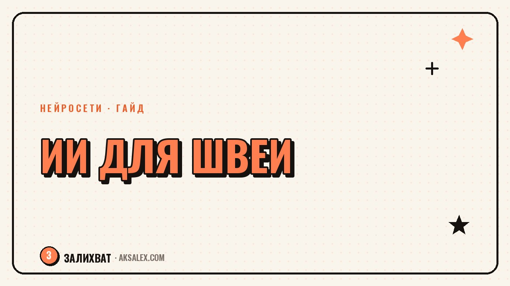

Нейросети для швеи: от эскиза до заказа

Если ты шьёшь на заказ или держишь небольшое ателье, то знаешь: руки и голова заняты тканью, а не перепиской с клиентами и подсчётом метров подкладки. Нейросети не умеют держать иглу, зато снимают с тебя всё, что вокруг шитья - показать клиенту вариант фасона до раскроя, посчитать смету, не упустить заявку в директе и написать пост для соцсетей, когда сил уже нет. Разберём, где они реально экономят время швеи, а где лучше по старинке довериться своему глазу и опыту.
Эскизы и визуализация моделей без художника
Самая частая боль на старте заказа - клиент говорит «хочу платье, но не такое, как у подруги», а показать на словах не может. Раньше тут помогал только набросок от руки или часы поиска картинок в интернете. Сейчас можно описать модель нейросети словами - длину, силуэт, ткань, детали - и за пару минут получить несколько вариантов визуализации, которые реально показать клиенту до того, как ты взялась за ножницы.
Как показать клиенту несколько вариантов фасона
Опиши фасон в деталях: длина рукава, тип ворота, посадка по талии, ткань и цвет. Сгенерируй 3-4 варианта, пришли клиенту с коротким вопросом «какой ближе?». Это убирает половину правок на этапе кроя, потому что человек утверждает модель заранее, а не после первой примерки. Дальше остаётся уточнить мелкие детали - длину, ширину пояса, карманы - уже по живому разговору.
- Описывай ткань словами точно: «лёгкий шифон», «плотный хлопок», «трикотаж в рубчик» - от этого меняется и силуэт на картинке
- Проси нейтральный фон и анфас, чтобы клиент видел именно крой, а не антураж
- Сохраняй удачные эскизы в отдельную папку - из них собирается каталог «что я умею шить»
Расчёт себестоимости и смета заказа
Недооценка расхода ткани и фурнитуры - причина, по которой швеи месяцами работают почти в ноль. Нейросеть-чат не заменит лекало, но отлично считает: вбей расход ткани на метр, цену за метр, стоимость подкладки, молнии, пуговиц, своё время по часовой ставке - и получишь честную смету за минуту, вместо прикидки «на глаз».
Удобно сделать один раз шаблон расчёта и каждый раз просить нейросеть пересчитать его под новый заказ, просто подставляя цифры. Так ты не забудешь включить время на примерку, доставку ткани или амортизацию машинки - то, что обычно вылетает из головы, когда считаешь в блокноте на коленке.
Клиент платит не за метры ткани, а за твоё время и руки - и смета должна честно это считать, иначе ателье работает в минус незаметно для тебя самой.
Заявки, замеры и переписка с клиентами
Поток заявок в директе и мессенджерах у швеи почти никогда не прекращается, и часть клиентов теряется просто потому, что ответ пришёл на следующий день. Нейросеть можно использовать как черновик ответа: ты скидываешь ей суть вопроса клиента, а она собирает вежливый и точный ответ с нужными вопросами - какие замеры нужны, какая ткань в наличии, какие сроки реальны.
Шаблон анкеты для замеров
Попроси нейросеть собрать анкету замеров под конкретное изделие - платье, брюки, пальто. Получится список из 8-12 пунктов с пояснением, как мерить каждую точку, который можно просто переслать клиенту, если он не может прийти на примерку лично. Это особенно спасает, когда заказы идут из других городов.
- Собери анкету замеров один раз на каждый тип изделия и держи под рукой
- Используй нейросеть, чтобы перевести «хочу красиво» клиента в конкретные вопросы о фасоне
- Фиксируй договорённости письменно - сроки, цену, аванс - нейросеть поможет сформулировать это коротко и без двойных смыслов
Соцсети и портфолио ателье
Фото готовых работ - лучшая реклама швеи, но подписи под ними часто пишутся в последнюю минуту и получаются одинаковыми: «готово, пишите в директ». Нейросеть помогает разнообразить текст: описать, из какой ткани сшито изделие, какая была задача клиента, какие детали делают модель особенной - и всё это за пару минут, а не за полчаса мучений.
| Инструмент | Для чего швее | Бесплатный доступ |
|---|---|---|
| Midjourney / аналоги в чатах с картинками | Эскизы моделей по описанию | Есть ограниченный бесплатный лимит |
| ChatGPT или похожий текстовый чат | Подписи к фото, ответы клиентам, анкеты замеров | Есть бесплатная версия |
| Canva с ИИ-функциями | Карточки «до/после», обложки для соцсетей | Есть бесплатный тариф |
| Таблицы с ИИ-помощником (Google Sheets, Excel) | Смета, учёт расхода ткани и заказов | Бесплатно при наличии аккаунта |
Что нейросеть не заменит в работе швеи
Важно честно понимать границы: нейросеть не снимет мерки, не почувствует, как ткань ведёт себя на фигуре, и не исправит посадку рукава на живом человеке. Эскиз - это ориентир для разговора с клиентом, а не техническое задание для кроя, и лекало всё равно строишь ты сама, своим опытом и глазом.
Использовать нейросети стоит там, где решается организационная часть работы - эскиз для обсуждения, смета, переписка, пост в соцсети. А там, где нужен опыт рук и чувство материала, доверие остаётся мастеру, и это ровно то, за что клиент в итоге платит.
- Эскиз нейросети - черновик для разговора, не финальное техзадание
- Решение по посадке и крою принимает мастер на примерке
- Автоматизируй переписку и расчёты, оставь себе творческую часть и контроль качества
Частые вопросы
Какая нейросеть лучше всего подходит для эскизов одежды?
Подойдёт любой сервис генерации изображений по текстовому описанию - важно не название, а то, насколько подробно ты описываешь ткань, силуэт и детали. Чем точнее описание, тем ближе результат к тому, что реально можно сшить.
Можно ли доверить нейросети расчёт стоимости заказа?
Да, если ты сама задаёшь формулу расчёта - расход ткани, цену фурнитуры, свою часовую ставку. Нейросеть быстро считает по готовому шаблону, но проверять итоговую сумму перед тем, как называть её клиенту, стоит всегда.
Как с помощью нейросети не терять заявки от клиентов?
Используй её как помощника для быстрого черновика ответа, когда заявок много и руки заняты шитьём. Это сокращает время до первого ответа, а именно долгое молчание чаще всего и теряет клиента.
Заменит ли нейросеть художника-модельера?
Нет, она ускоряет только этап показа идеи клиенту до раскроя. Финальное решение по силуэту, посадке и технологии шитья всё равно принимает человек с опытом, а нейросеть лишь экономит время на обсуждении вариантов.
С чего начать швее, которая никогда не пробовала нейросети?
Начни с одной задачи - например, с подписей к фото готовых работ в соцсетях. Когда привыкнешь формулировать запросы, подключай смету и анкету замеров - так переход будет постепенным и без стресса.
Раз тема оказалась полезной, вот что почитать следующим. Живёшь в маленьком городе и хочешь вести блог? Разбираем, как найти свою аудиторию без страха, что все знают, кто ты.
Читать статью →а не вручную